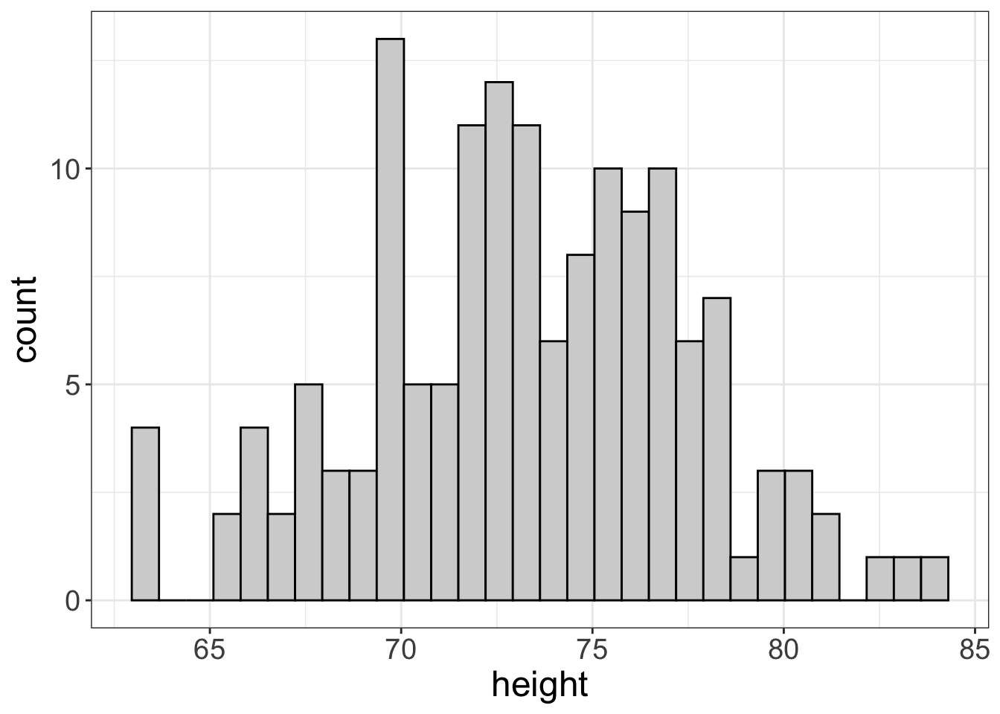
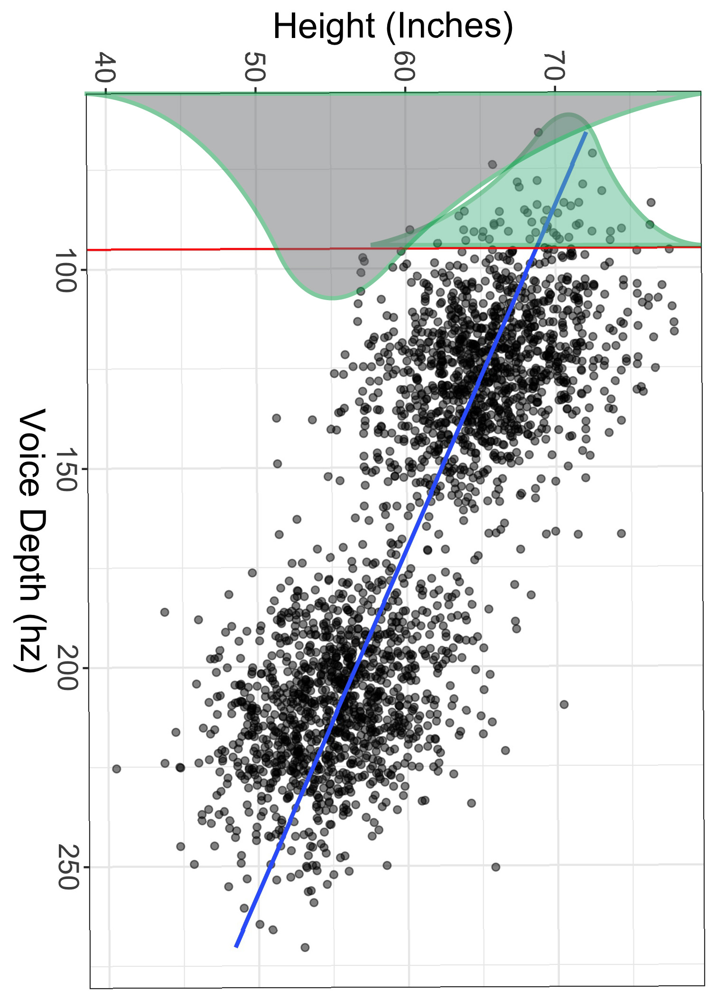

Bivariate Estimates
I really like plots, if it wasn’t so obvious yet. I spend an onordinate amount of my daily stress points grumbling about the lack of visuals used in scientific research.
That does not mean, however, that I think visuals ought to replace statistics. The two are like milk and cookies. You really shouldn’t have one without the other. (Seriously….who drinks milk as is?)
The strength of visuals is they give an overall impression of what is going on with one’s data. But, the disadvantage of visuals is they are, by nature, subjective or impressionistic. Sometimes we need cold, hard numbers to better communicate what we’re seeing.
Likewise, we wouldn’t want to just look at statistics without seeing visuals. Visuals are a “sanity check” that we can use to make sure our estimates actually make sense.
So, with that, let’s talk about the basic idea of what bivariate estimates are used for. This will seem like a small tangent, at first. (And maybe at last too!) But, bear with me a minute.
Statistics Help Us Predict Things
Statisticians are the world’s foremost (legitimate) fortune-tellers. You see, our life’s purpose is to find patterns in data, then use those patterns to make predictions. Sometimes making predictions is all we care about. (Maybe, for example, I want to predict which stocks will make me a billionaire). Other times, we move a step beyond prediction into explanation. Explanation seeks to explain why one variable tends to predict another variable. Perhaps the ultimate goal of science is then manipulation; once we truly understand (i.e., can explain) how things work, we can then manipulate the conditions to achieve some sort of benefit.
In short….
Prediction -> Explanation -> Manipulation
As an example, Alex Fleming, the fella who discovered antibiotics once left a petri dish unattended whilst he went on vacation. Much to his dismay, when he returned, he found that one petri dish had mold growing on it and it happened to be that bacterial spores failed to grow in that particular petri dish. Dr. Fleming found a pattern.
So, Fleming decided to run the experiment again and this time he intentionally left mold in a petri dish. He then predicted the bacterial spores would fail to grow. And he was right.
Eventually, explanations came, and now we have antibiotics. These antibiotics are the fruits of scientists’ manipulations of natural laws.
But, before we can ever get to manipulation, we have to first pass prediction. That there is where statistics comes in.
My point for this section is that statistics are, first and foremost, numbers that give information about prediction.
Let’s consider a trivial example of prediction. Maybe you work at a specialized clothing company called “Gold and Diamonds Custome Clothes.” This morning you received a voicemail from a new very wealthy client. This client says they’re coming in tomorrow and they want a new bathrobe made of pure gold. If you can get it done, you’ll make a boatload of money. Unfortunately, the client left no return number, so you can’t ask them for measurements and you can’t waste your precious gold thread making lots of different sized robes. You really have to get this right the first time.
That’s a realistic situation, I think :)
As a talented seamstress, all you require is the height of your client to make a perfect fitting robe. But, again, you don’t know how tall the client is.
But, being the statistically saavy seamstress that you are, you decide to use past client height data. You plot a histogram of the heights of all your past clients:
#> [1] 66
If you averaged the height of all past clients, you get 5 feet and 6 inches. But, this is silk made of pure gold! From past experience, you know that if your client is more than 5 inches off, you’re in big trouble. And, it just so happens that 63% of your past clients were outside of that range. So, there’s a 63% chance you’ll screw this up.
You don’t like them odds.
If only you had more information!
Well, after listening to the voicemail again, you realize your client is most likely male. We can use that information!
So, now you plot the mean of just the male clients from the past:

If we computed the mean here, we’d get 5 feet and 11. Now, only 17% of our clients are not within the average value.
That’s much better, but maybe it’s still not good enough. You have some ideas of how we might be able to get even closer. But first, let’s pause to talk statistical stuff.
Let’s review what we did for a minute. We took a univariate distribution (height of all clients) and dissected it a smaller univariate distribution (height of just the men). Or, to put it in statistical language, we dissected our univariate distribution into a conditional distribution.
Or, the distribution of height conditional on the clients being male.
And, in so doing, we reduced the variance of our prediction. Remember, with all clients, 63% were outside of our 4 inch boundary, while with the conditional distribution, 0.17% were outside our 4 inch boundary. Or, another way to put it, our conditional distribution is more precise in predicting our client’s height.
Ya’ll totally just did statistics.
That is exactly what the foundation of statistics is all about: we take the univariate distribution of the variable we’re trying to predict (i.e., the outcome variable), and dissecting that outcome variable into smaller distributions for specific values of our predictor variable(s).
We okay so far?
Alright, so maybe we’re not terribly comfortable with having a 17% probability of screwing this up. What other information can we use? Well, you know that there’s a relationship between the depth of one’s voice and their height. (Tall people tend to have deeper voices). So, maybe you measure the frequency based off the voicemail and find the mystery client has a sultry depth of 96Hz. How can we use that information now?
Well, it just so happens that you have this weird habit of measuring the depth of your client’s voices. So, once again, you dissect your distribution. But this time, you look at male clients who have a depth of around 96hz:

THat leaves us with an average of 6 even. Now, our probability of screwing this up drops to 2%, if we condition on male clients with a voice depth near 96hz.
Conditional Estimates
That little example of a world-renown seamstress tells you all you need to know about statistics. (Well, mostly). This concept describes conditional estimates. Conditional estimates are statistics we compute for different slices or cross-sections of the whole distribution. In this example, our cross-section was males with voices near 96hz. That distribution is much smaller than the entire distributions of heights.
That there is exactly what statistics is about: we attempt to find a small set of predictor variables that enable us to slice the entire outcome variable distribution into a more precise univariate distribution. This more precise univariate distribution allows us to make predictions that are much closer than if we didn’t slice the distribution.
Now, let’s go ahead and link that concept (conditional estimates) to what we learned in the last chapter. Below is a plot of neighborhood (East vs. West) against height. From the last chapter, we see that neighborhood doesn’t help us all that much. There’s no pattern between neighborhood and height. Or, to put it in the terminology of this chapter, the height estimate, conditional on neighborhood, is the same as it is from the unconditional estimate. Or, conditioning didn’t help us develop a more precise estimate of height.

Some predictors, like gender and voice depth, are excellent; there is a pattern between them and the outcome and, as a result, their conditional distributions are much more precise than the unconditional distributions. Some predictors (like neighborhood) are bad; there’s no pattern and their conditional distributions are no more precise the the unconditional distributions.
In short, good predictors have a pattern with the outcome and they reduce our uncertainty in our predictions.
Estimates for Numeric Predictors
Alright, I kinda lied to you. Well, technically, I didn’t lie. I oversimplified. In the previous example, I mentioned how we dissect the univariate distribution of height into a smaller distribution based on those with a depth of 95hz. But let’s look at the relationship between height and depth. I’m also going to add a red line for those with a voice depth of 95hz:

You may notice that there are actually very few datapoints that fall at 95hz. There may be, at most, five that are within one point of 95hz. Well, a distribution with only 5 points isn’t ideal.
So how do we address this? What we do is we borrow information from all the rest of the plot. Imagine that for every possible value of X, we compute the spread (maybe the standard deviation, for example) of \(Y\) scores for that particular area. Here’s a visual that may help:

In this image, I’ve drawn a bunch of distributions for a bunch of different values of \(X\). What we do in stats is we make the assumption that the spread at each level of \(X\) is approximately the same (as shown in the image above). If the spread is approximately the same, then we can pretend there actually is a very large distribution heights for individuals who had a voice depth of 95hz.
Still not getting it? I understand. Let’s go ahead and rotate the image 90 degrees. Now envision each of those histograms as the distribution of height for a specific level of voice depth. Notice the width of each histogram is approximately the same. If that is indeed the case, then we can assume the spread of the conditional distribution at 95hz is the same as the spread at any level of depth.

Make sense?
I know, I know. It’s all very theoretical. But I’m trying to show you that statistics is all about using a predictor (or predictors) to partition the outcome variable (height in this case) into a smaller and more precise distribution.
To illustrate the “more precise” feature, look at the image below. The gray histogram is the distribution of heights for all individuals, while the green histogram is the (hypothetical) distribution of heights for only those with voice depths of exactly 95hz. Notice also the green distribution is much smaller than the gray one.

Just like with univariate distributions, we have a mean (but we call it a conditional mean) and a standard deviation (but we call it a conditional standard deviation, or the residual standard error).
But how do we compute that conditional mean? We use slopes and intercepts!
Slopes and Intercepts
Before we talk about slopes and intercepts, let’s put another image of a scatterplot up. Let’s plot the relationship between years of education and income. Here, income is expressed in thousands of dollars.

Before we get technical, let’s go ahead and describe what we’re seeing. We see a positive relationship: as the years of education increases, people tend to make more money. Simple enough.
Alright, time to brush the cobwebs from your brain. Remember back in the day when you took algebra, you learned the equation for a line? Let me jog it a bit more with an equation:
\[y = mx + b\]
We called \(b\) our intercept and we called \(m\) our slope. We call \(m\) and \(b\) “parameters.” Why? Don’t worry about it. They’re just the parts of the equation that we’re trying to estimate or compute.
In statistics, it ain’t all that different, but we use different names. Instead of \(b\), we have \(b_0\). Instead of \(m\), we have \(b_1\). We also switch things around (so we put the intercept first, then the slope).
But we also add one other element to the equation:
\[y = b_0 + b_1 x + e\]
We add \(e\). What is \(e\)? That is error. So, statistics is just algebra + error:

Figure 3: Statistics is just algebra with error!
We’ll talk more about that \(e\) later. The important thing to remember is what a slope and intercept are.
An intercept (\(b_0\)) is the expected value of \(Y\) when \(X\) is equal to zero A slope (\(b_0\)) is the degree of change in \(Y\) every time \(X\) changes.
Or, in the case of our school/income example:
The intercept tells us the expected salary of someone who went to zero school. The slope tells us how much your salary (\(Y\)) increases every year you attend school (\(X\))
Alright, alright. So what are the slope/intercept for this example? (BTW, I’m going to show you how to compute the slope/intercept in a bit. Just pretend it’s magic at this point). The intercept for the dataset shown above is (\(b_0\)) = 53.5; if you don’t attend any school, we expect you to make $ $53,500. That’s helpful information! It puts something we visually see into concrete numbers.
And the slope? The slope here is (\(b_1\)) = 7.5. What does that tell us? For every year we go to school, we can expect our annual salary to increase by $$7,500. That’s also helpful information!
So, we have taken an informative plot and converted what we’re seeing into meaningful numbers. (However, remember that reporting the slope/intercept only makes sense if we don’t see any problems, such as nonlinearity and/or outliers).
Making Predictions
We can also use that information to make predictions! Suppose you’re considering going to graduate school and want to know how much it will impact your EP. (For those not up to the latest lingo, EP means “Earning Potential.”) If you end up going to graduate school, you will have gone to school for a total of, say, nine years. How much do you expect to make?
It’s actually pretty easy. Let me type out the equation for a line again:
\[y = b_0 + b_1 x + e\]
Well, we have both (\(b_1\)) and (\(b_0\)), and we have our desired \(x\) (nine years), so let’s just plug in those values:
\[ \begin{aligned} y &= b_0 + b_1 \times x + e \\ y &= 53.5 + 7.5 \times 9 + e \\ y &= 121 \end{aligned} \]
Wait a minute! What happened to the \(e\)? Well, unfortunately, we don’t know the error, so we assume it’s zero. (No, I’m not cheating. This is what you do when you’re making predictions).
Isn’t that pretty sweet! We can be psychic and stuff and make predictions, without spending hours divining insights from social media the psychic energy that surrounds us!
Of course, we’re never going to be perfect in our predictions. (That’s why the \(e\) is there!) But our predictions are going to be much more precise, as long as our predictors are informative.
When Slopes/Intercepts Don’t Make Sense
Both the slope and intercept were quite informative in this situation, but sometimes the intercept doesn’t really make sense. Suppose we computed the slope/intercept for the relationship between vocal depth and height. In this situation, the intercept is the expected height when one has a vocal depth of 0hz.
That doesn’t make sense.
How do you have a vocal depth of 0hz? I suppose if you’re mute, you technically have a depth of 0hz. But that’s not something our model is trying to capture. Rather, the intercept isn’t all that helpful here. So, if it’s not helpful, it’s not helpful. No big deal. That doesn’t mean there’s something wrong with our data. It simply means the information we can gather from our model is slightly more limited. (You can compute the intercept, but it’s just not as fun to interpret).
Sometimes the slope is also not all that informative. Let’s look at an example. Let’s say I administer my brand new survey called “Statistics Intuition: Unlock your True Potential in All Facets of Life.” My exam has a total of 10 items where people can score a minimum of 0 and a maximum of 4, for a total score falling between 0 and 40. I then have a bunch of independent raters observe 100 different behaviors during a formal presentation. These behaviors are summed up across raters for a total score that ranges from around 800 to 2000. If I plot these data, I get:

What is our slope and intercept? The slope is 1021.2 and the intercept is 9.7. So, if someone scores a zero on their statistics intuition exam, we expect them to have a charisma score of 9.7, and for every one score increase on the stats intuition scale, we expect charisma to increase by 1021.2.
That’s not all that helpful. Both of these measures are on arbitrary scales. We have an intuition for what a 1 year increase in school means, or a $1,000 increase in income, or a increase of one inch of height. But we don’t have that same intuition for these scales we just made up.
These arbitrary scales are quite common in science, especially in psychology. We have scales of depression, or anxiety, or stress. What is a depression unit? Well, it’s meaningless. The scale is arbitrary.
When we have arbitrary scales, the slope and intercept aren’t all that helpful.
So, what do we do? Do we not have any estimates we can use?
Well, no. There is something we can use when our scales are arbitrary. It’s called a correlation coefficient.
Correlation Coefficients
Correlations use what’s called a “standardized metric.” That means that, no matter what sort of variables you have, the meaning of a correlation coefficient is the same. So, a correlation of 0.5 between height and weight is just as strong as a correlation of 0.5 between study hours and exam scores.
Wait a minute. I’m getting ahead of myself. Let me give a little more detail.
Correlations are denoted by \(r\). Correlations (\(r\)) range from between -1 and +1. \(r\) = -1 indicates there is a perfect negative relationship between the two variables. \(r\) = +1 means there is a perfect positive relationship between the two variables. Let’s see those examples as a plot:

The left plot is an example of a perfect positive correlation. If we measured people’s height in inches and their height in CM, then plotted the relationship between the two, we’d have a perfect positive correlation. The right plot shows a perfect negative correlation. Here, I’m assuming we give a bunch of kids $20 then after a few days plot how much they have spent against how much they have remaining.
Perfect correlations are rare; if they were common, we’d be mathematicians, not statisticians. Instead, we tend to find less than perfect relationships. Let’s look at some examples:

These scatterplots show what different sizes of correlations look like (\(r\) = 0.8, -0.6, 0.2, and 0.0).
What’s a “Good” Correlation?
I knew you’d ask that. And, alas, it kinda depends on your discipline. When I worked as a biostatistician, it wasn’t uncommon to see correlations of 0.8 or 0.9. You almost never see that in psychology.
And, because I’m a psychologist, I’ll tell you what’s generally considered good correlations. You see, there was once this fellow named Jacob Cohen who came up with “benchmarks” for what’s considered weak, moderate, and strong:
| Correlation Size | Correlation Description |
|---|---|
| 0.5 | Strong |
| 0.3 | Moderate |
| 0.1 | Weak |
These benchmarks are somewhat controversial, and for good reasons. We shouldn’t let convention tell us what is considered “strong” or whatnot. Every discipline is different and every discipline should have expectations about what’s considered a strong/moderate/weak correlation. So, don’t use these benchmarks as gospel. But, in the absence of well-curated quantitative reviews of the literature, this will suffice.
Computing Estimates in R
This is quite easy to do in R. The syntax is very similar to what we did in last chapter with flexplot. But, rather than using the flexplot function, we use the lm function, which is short for “linear model.” We then use flexplot’s estimates function. Let’s go ahead and compute the estimates for the relationship between weight loss and motivation in the exercise_data dataset:
data("exercise_data")
# fit a linear model
model = lm(weight.loss~motivation, data=exercise_data)
estimates(model)#> Model R squared:
#> 0.125 (0.04, 0.21)
#>
#> Semi-Partial R squared:
#> motivation
#> 0.125
#> Correlation:
#> 0.354
#>
#>
#> Estimates for Numeric Variables =
#> variables estimate lower upper std.estimate std.lower std.upper
#> 1 (Intercept) -3.34 -7.05 0.38 0.00 0.00 0.00
#> 2 motivation 0.19 0.12 0.25 0.35 -0.34 1.05You’ll see that it gives several statistics, including \(R^2\) and the semi-partial, which we’ll talk about later, as well as the correlation, slope, and intercept.
Estimates for Categorical Predictors
In some ways, computing estimates for categorical predictors is easier to conceptualize than with numeric predictors. It’s easier because we don’t have to envision a separate distribution for lots and lots of possible values of \(X\). WIth categorical predictors, we usually only have a few \(X\) values. And, our beeswarm plots already show a histogram, so it’s not hard to remember there are conditional distributions attached to each level of \(X\). Let’s go ahead and look at another plot:

If we rotate beeswarm plots (like in the right image), they look like histograms. This makes it easier to remember there are conditional distributions for each level of Gender.
Slopes and Intercepts for Categorical Predictors?
I just spent an inordinate amount of time talking about slopes and intercept. Hopefully my time was worth it and now you understand a slope and an intercept. Most textbook authors would be content at this point to move on and say, “well, that was fun. Time to talk about different estimates because there are no slopes and intercepts for categorical variables.”
Wrong, fictitious textbook author!
For, you see, my young friends, there are indeed such things as slopes and intercepts for categorical variables.
But you already knew that, didn’t you?
Remember how, in the last chapter, we talked about how beeswarm plots are just scatterplots + jittering. If beeswarm plots are nothing more than scatterplots, can we not fit a line to the data as we did with numeric variables and compute the slope/intercept?
Why yes…yes we can. Let’s go ahead and see what that would look like:

Do you see what’s happening? The line (in red) passes right through the means of the two groups (Male and Female). And it always will! Fascinating!!!!!!!!!!
But there’s more. I know, I know. It’s hard to handle all this excitement. If you need to take a break, I understand.
Here’s something that’s extra cool. If you fit a regression line to categorical data (like I’ve done above), the intercept is equal to the mean of one of the groups (called the “referent group”). The intercept then is the difference between the two groups.
Let me say that again, but more showy and stuff:
When using categorical variables to predict numeric variables, the intercept is equal to the mean of the referent group and the slope is equal to the difference between the two groups.
What is a referent group?
When you fit a model in R for a categorical predictor, remember that, in the background, R converts the group labels (e.g., Male and Female) into numbers (e.g., 0 and 1). R must choose which group is zero. The group that is zero is called the “referent group.” Why? Because it’s the group all the other groups are referenced off of.
How does R decide which group is the referent group? It uses the alphabet. Weird. So, in our Male/Female example, females would be the referent group. If you don’t like that, you can use the relevel command in R:
height = relevel(height, ref=‘Male’)
When you’re actually computing estimates in R or JASP, the whole intercept/slope estimates may be hidden.
For example, if we computed the estimates for the superpower by speed relationship, we’d get:
#> Model R squared:
#> 0.021 (0, 0.04)
#>
#> Semi-Partial R squared:
#> superpower
#> 0.021
#>
#> Estimates for Factors:
#> variables levels estimate lower upper
#> 1 superpower no 5 4.98 5.01
#> 2 yes 5.12 5.06 5.18
#>
#>
#> Mean Differences:
#> variables comparison difference lower upper cohens.d
#> 1 superpower yes-no 0.13 0.04 0.21 0.75And in JASP, from the linear modeling module, we just specify our predictor (in this case superpower) and outcome (in this case, speed), then we get tables that look like this:

In both JASP and R, you don’t get a slope and intercept. Instead, you get means, mean differences, etc. I did this to make things easier to conceptualize for n00bs. (You technically don’t have to know that the intercept = the mean of the referent group and the slope = the mean difference between the two groups). So why do I tell you about the whole slope/intercept thing?? Well, to torture you, for one. But, more importantly, because I do think it’s important for you to recognize that there’s nothing special about the categorical/numeric predictor distinction. In both cases we get scatterplots (though we jitter categorical variables) and in both cases we have slopes/intercepts (though with categorical variables we have to convert the labels to numbers).
And that is critical to understand. For you to see the power of the general linear model (which we’ll cover in a later chapter), you must understand that all these statistical models are really the same thing. When you understand they’re the same, it’s easier to conceptualize what’s going on and make informed decisions.
What Happens When You Have 3+ Groups?
It seems intuitive that if you have 3+ groups, you would convert the group labels to numbers like 0,1,2, etc. Well, that’s not how it works. Things are a bit more complicated when you have 3+ groups. Let’s say you have Male/Female/Nonbinary. R will still choose Female as the referent group (because it’s first in the alphabet). But, it will also create a new column in your dataset in the background; so it will have a column called “Male” and a column called “Nonbinary.” Then it will have ones and zeroes in the male column indicating which participants are Male. (Those that are male are given a score of 1, otherwise they get a score of zero). Likewise for the nonbinary column. We don’t need a third column for Females, though. Why? Because if you’re not Male, and you’re not Nonbinary, you have to be Female. (There’s also more technical reasons we don’t have a third column).
So, with 3+ groups you end up having two slopes: one indicating the difference between Females and Males, and one indicating the difference between Females and Nonbinary.
That’s all very complicated, I know. It would be much easier if we were to simply have Females be 0, Males be 1, and Nonbinary be 2. But that won’t work and for a very good reason. If you use 0/1/2, R will think you have a numeric predictor. Let’s look at an example:
[complete example after I figure out how to embed chunks within chunks]
In reality, when we’re looking at estimates for categorical variables, we actually don’t study the slope/intercept. We instead focus on a few important estimates:
- the means of each group
- the mean differences between groups
- Cohen’s \(d\)
What is Cohen’s \(d\), you ask?
Ooooohhhhhh boooooooooy. This is getting fun. If you thought the correlation was the best thing since sliced pineapple, you’re going to love Cohen’s \(d\). Cohen’s \(d\) is the correlation coefficient of categorical predictors.
Cohen’s \(d\)
Remember how that correlation coefficient (\(r\)) was our ally when we had arbitrary scales for our variables? Likewise, there’s Cohen’s \(d\) is our ally when we have an arbitrary scale for our outcome variable and have categorical predictors. Let’s look at an example:

So, professors average 48.6 stress while students average 45.5, for a difference of 3.
But what does that mean? Nothing really. The stress scale is arbitrary. That’s where Cohen’s \(d\) comes in.
Unfortunately, the values associated with Cohen’s \(d\) are less intuitive than those associated with \(r\). While \(r\) ranges from -1 to +1, Cohen’s \(d\) can be any value. \(d\) expresses things in terms of standard deviations. So, a Cohen’s \(d\) of .9 says that one group is .9 standard deviations different from the other.
Cohen’s \(d\), Standard Devaitions, and Probability
Most intro stats textbooks make students learn how to convert what are called \(Z\) scores into probabilities. I think this is mostly a pointless exercise. However, one of the advantages of this exercise is that it does give you an intuition for how much of a normal distribution falls within certain ranges of values. So, let me review that real quick.
Let’s say we have a normal distribution. We know that approximately 68% of scores are within 1 standard deviation of the mean. Or, put differently, 68% of an entire distribution are expected to be within a standard deviation of the mean. How do we know that? Don’t worry about it. It requires calculus, and nobody in their right mind likes calculus.
Anyway, it’s actually pretty rare for people to score more than one standard deviation above the mean. For example, if one has an IQ of 130, that’s two standard deviations above the mean (IQ’s mean is 100 and its standard deviation is 15). The probability of scoring 130 or higher is about 0.02 (or about 2% of the population has an IQ score of 130 or higher).
We’ll get more into converting standard deviations into probabiliy in our probability chapter. But, the point is that most (68%) of scores fall within 1 standard deviation of the mean.
Now, if it’s rare for one person to be a whole standard deviation above the mean, it’s even more rare for an entire group to average more than one standard deviation above the mean. Cohen’s \(d\) is a measure of how many standard deviations different two groups are. So, a Cohen’s \(d\) of 1 would be extremely rare, at least if the two groups are from the same population.
Like with correlations, there are also benchmarks for Cohen’s \(d\). These may be even more helpful than for correlations, because with correlations we at least have a limit on the range (-1 to +1). Again, with all the cautions of universal benchmarks in mind (e.g., these should be discipline-specific, different areas will have different standards), here are the commonly-used benchmarks in psychology:
| Cohen’s \(d\) Size | Description |
|---|---|
| 0.8 | Strong |
| 0.5 | Moderate |
| 0.2 | Weak |